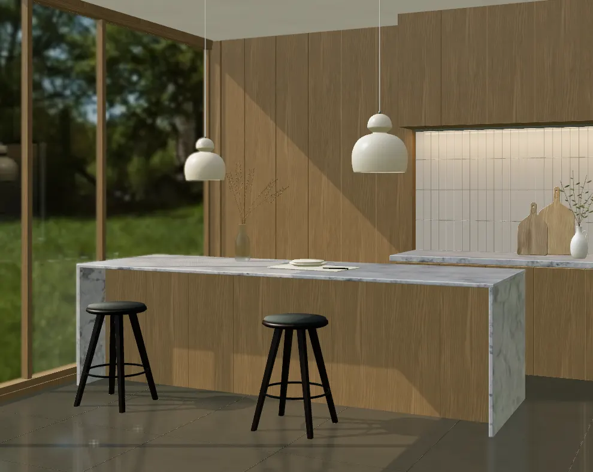
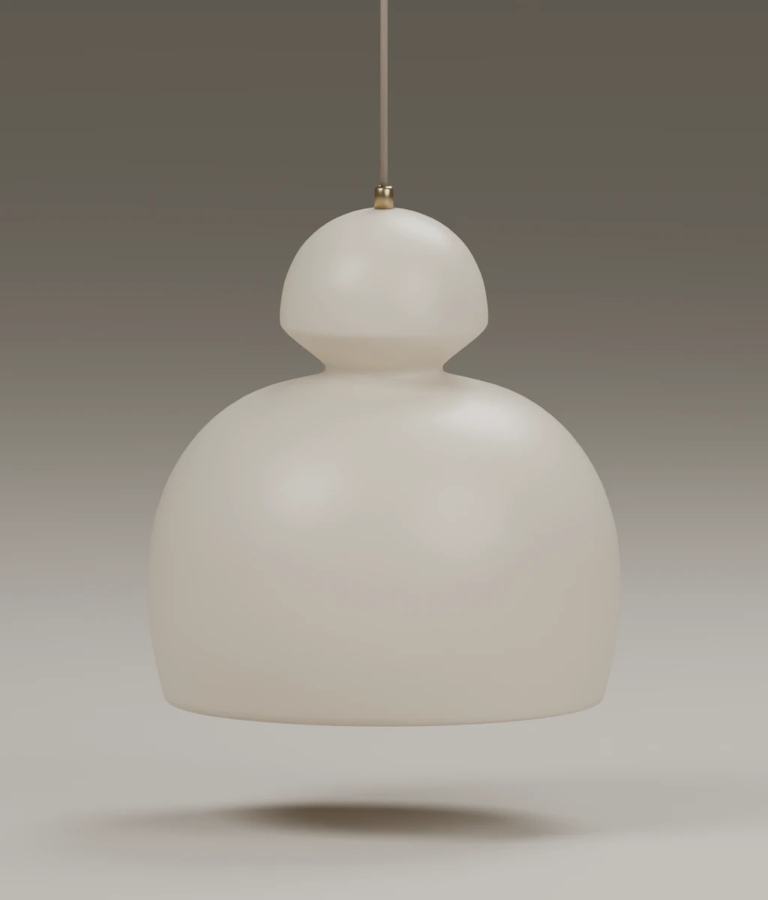

LIGHTING COLLECTION / MOBOPRIVATE STUDY
MOBO / Finish and light study
Handmade form. Individual character.
About 90 seconds with music. Exit restores your settings.
Manual changes pause the tour.

Preparing the room

RENDERED PREVIEWLoading interactive view…